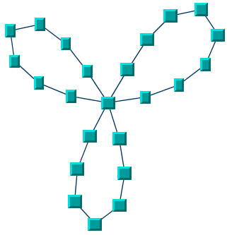
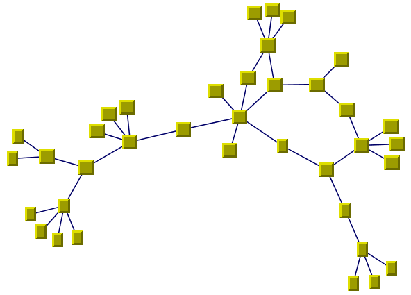
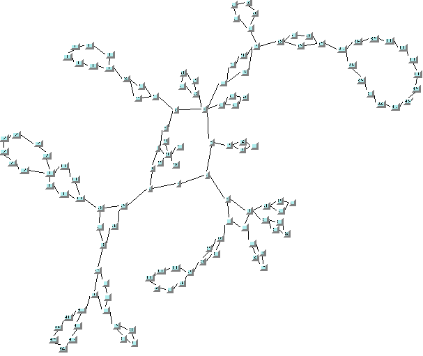
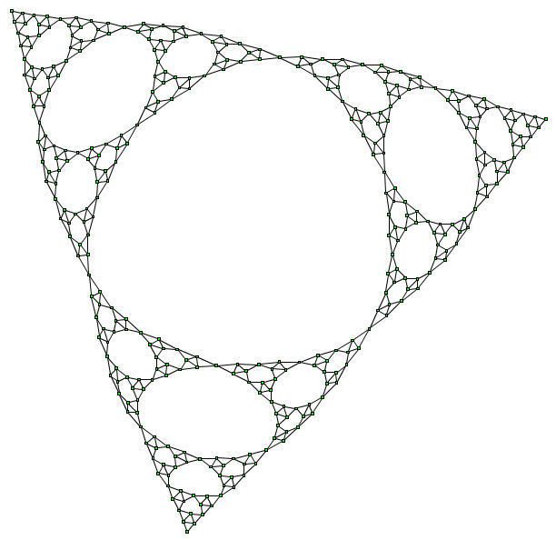

IBM
ILOG Elixir Enterprise
V3.0 3.0
>
Using graph layout algorithms
>
Layout algorithms
>
Force-directed (FL)
>
General information on the FL
INDEX
|
PREVIOUS
NEXT
General information on the FL
FL samples
The following sample drawings are produced with the Force-directed Layout (FL).

Small cyclic graph drawing produced with Force-directed Layout

Medium graph drawing (combination of cycles and trees) produced with the Force-directed Layout

Large graph drawing (combination of cycles and trees) produced with the Force-directed Layout

Large graph drawing (Sierpinski Triangle) produced with the Force-directed Layout in fast multilevel layout mode
What types of graphs suit the FL?
Any type of graph:
connected graphs and disconnected graphs
planar graphs and nonplanar graphs
Application domains for FL
Application domains for Force-directed include:
Telecoms and networking (WAN diagrams)
Software management/software (re-)engineering (call graphs)
CASE tools (dependency diagrams)
Database and knowledge engineering (semantic networks, database query graphs, qualitative reasoning and other artificial intelligence diagrams, and so on)
World Wide Web (Web hyperlink neighborhood)
Current section
Force-directed (FL)